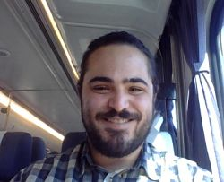

About Me

My name is Medric A Riley. I was born in Sacramento, CA, and have lived in Davis, CA, ever since. After graduating from Leonardo Da Vinci Charter Academy in 2011, I decided to try my hand at higher education, and enrolled at Sacramento City College. As it turns out, I did not possess the focus to excel in college at the time, and after two years I decided to take a break, and focus on building my work experience.
After two years of working odd jobs, I decided that it was time for me to go back to college. I re-enrolled at Sacramento City, and on a whim, decided to take an intro to programming course. I can still remember being completely enthralled by the material, and by the end of that 90 minute session, I had found my major.
It was at this time that I got the job that I worked for the next four years. I began working at a restaurant in my hometown of Davis, and over the course of those four years moved from bussing, to being the expo, to serving, to finally bartending. While I can't say that I've loved every moment of this job, it has been a very formative experience for me, and has taught me skills which include customer interaction, multi-tasking, conflict resolution, and working effectively with others under pressure.